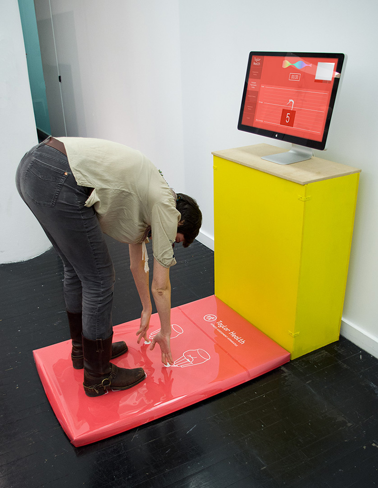
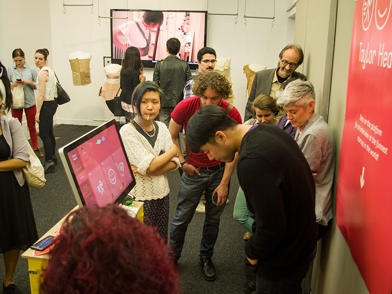

Fei Liu is a designer, artist, writer and DJ exploring digital empathy, and the narrative potential of interfaces.


2014
The Qualified Life is an interactive installation that imagines the future of the workplace as a fully automated and gamified system that entrusts algorithms to determine the qualifications of employment.
The player is introduced to Taylor Health, a startup looking to recruit talent, and begins the interview process by entering a name. The interview software finds the player through social media and begins to describe the bizarre steps they must complete.
The project interrogates the relationship between ergonomics and corporate wellness as forms of organizational science used to maintain, leverage, and monetizing the health of a workforce, and its resulting productivity: post-industrial Taylorism.
To read my research: the-qualified-life.tumblr.com